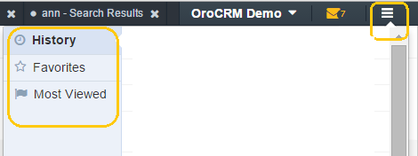
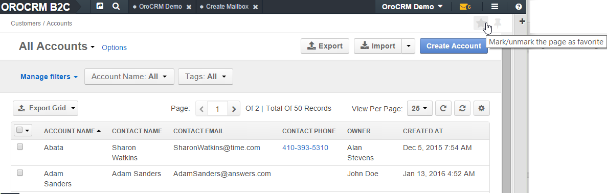
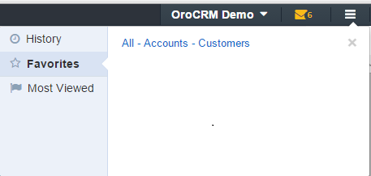

The “hamburger” icon next to the user menu contains a history of your page views, the list of your favorite pages, and the list of the most viewed pages in OroCommerce.
All the page names available in the lists are clickable links to the relevant pages.
This section displays links to the 20 latest pages you’ve visited in reverse chronological order. This list is particularly useful when you want to open a page that you have recently used without searching for it.
The links to all the pages that you have marked as “favorite” are displayed in this section.
Most of the pages can be marked as a “favorite”. This is handy when you need to return to the same page repeatedly. In order to do so, click the star-shaped “Mark as favorite” icon in the top right corner of the page.
The icon will turn yellow and a link to the page will appear in the “Favorites” menu.
In order to remove a page from the “Favorites” page, open the page and click the yellow star icon.
The icon will turn grey and the page will be removed from the “Favorites” list.
This section displays links to the most frequently used pages. Every time you visit a page, OroCommerce recalculates the statistics and updates the list.
Related Topics